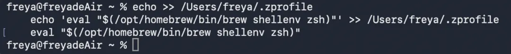
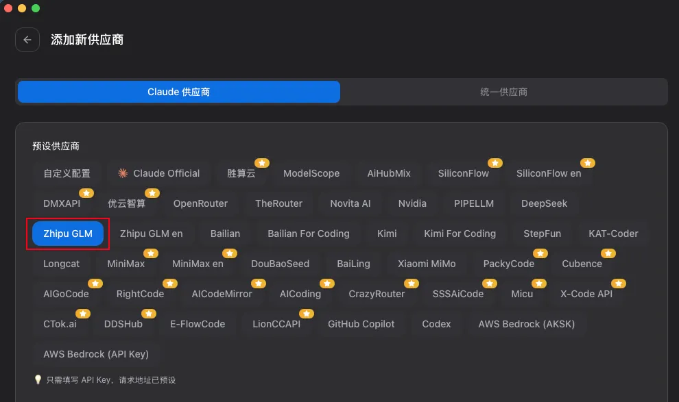
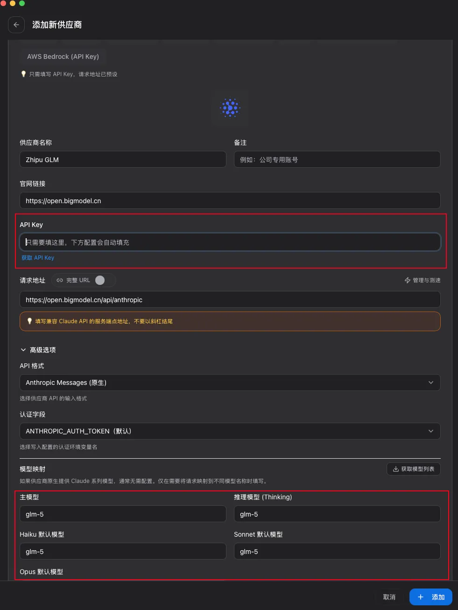

// install
跟着步骤走，5 分钟搞定。
Windows 和 Mac 都支持，有魔法没魔法都能用。
在应用程序中找到「终端」（Terminal）并打开。这是你和 Claude Code 对话的地方。
根据你的网络情况，选择一种安装方式：
直接用官方命令安装，最简单：
curl -fsSL https://claude.ai/install.sh | bash
通过 Homebrew 安装。如果你还没装 Homebrew，先运行这条命令：
/bin/bash -c "$(curl -fsSL https://raw.githubusercontent.com/Homebrew/install/HEAD/install.sh)"
安装完 Homebrew 后，按提示把它加到 PATH：

然后运行：
brew install --cask claude-code@latest
输入以下命令，看到版本号就说明安装成功了：
claude --version
Claude Code 在 Windows 上依赖 Git Bash，所以必须先装 Git。打开「终端」，运行：
winget install Git.Git
已经装过 Git 的可以跳过这步。
根据你的网络情况，选择一种安装方式：
直接用官方命令安装：
irm https://claude.ai/install.ps1 | iex
用 WinGet（Windows 官方包管理器）安装：
winget install Anthropic.ClaudeCode
输入以下命令，看到小螃蟹就说明安装成功了：
claude
装好了框架，还需要给它接上模型才能用。有 Claude 账号的可以直接登录，这里教大家用国产模型。
CC Switch 是一个模型切换工具，支持 Claude Code、Codex 等多种 Agent。
在终端运行：
brew tap farion1231/ccswitch
brew install --cask cc-switch
下载安装包，双击运行即可：
https://github.com/farion1231/cc-switch/releases/download/v3.14.0/CC-Switch-v3.14.0-Windows.msi
进不去 GitHub？点这里：百度网盘（提取码：qkxw）
打开 CC Switch，在 Claude 那栏点右上角的加号，选择你想用的模型（推荐 GLM 国内版）：

填入 API Key，点添加：

API Key 是你调用模型服务的凭证。去模型服务商的官网申请就行，不懂的可以直接问任何 AI，它会教你。
模型映射里面，根据你们想要使用的模型填上对应的名称就好了。比如说想使用智谱的 GLM-5.1 就填 GLM-5.1，如果想使用智谱其他的模型就只需要更改它的名称就可以了。
配置好后，在 CC Switch 里点击切换。以后想换模型，在 Claude Code 里用 /model 命令切换。
装好了，接上脑子了，现在来第一次启动。
不要在根目录启动 Claude Code。先用 cd 命令进入你想工作的文件夹：
cd 你的文件夹路径
💡 输入 cd 和空格后，直接把文件夹拖进终端窗口。
还没有项目？没关系，直接在命令行输入 claude 即可启动，后续随时可以切换到项目目录。
claude
开发时推荐用这个命令，省得一直点 allow：
claude --dangerously-skip-permissions
第一次启动会让你选颜色主题、确认安全提示、设置终端选项。按提示走就行，都用默认的推荐设置。
Claude Code 启动后只会读取当前文件夹的内容。在根目录启动，它会读取你整个电脑，既不安全也不专注。cd 到具体文件夹，它的上下文更干净，干活更聪明。